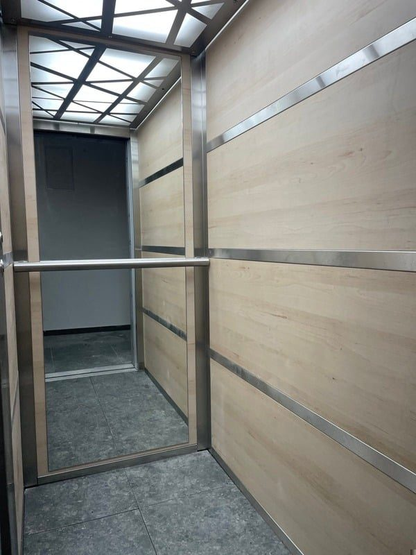
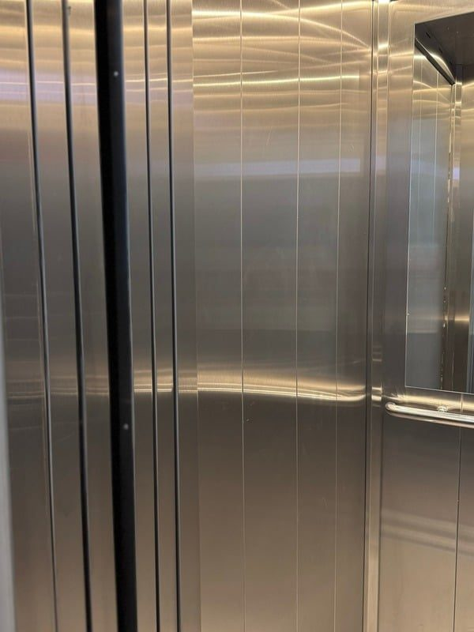
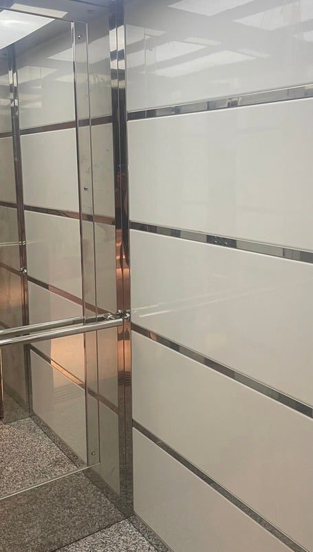
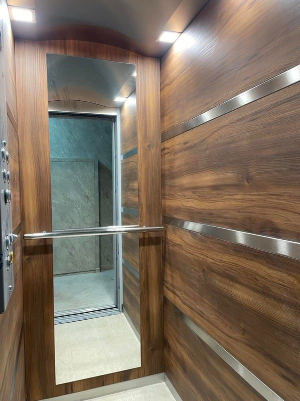

Всяка сграда има етажи. Ние ги свързваме.
Визуалната идентичност на Verton — марката асансьори на MGM Group 2000. Идеята: всяка сграда има етажи, а ние сме това, което ги свързва. Затова сайтът е построен като сграда — всяка секция е етаж, а индикаторът в ъгъла показва къде се намирате.
Verton е марката. MGM е фирмата зад нея.
MGM Group 2000 е фирмата, а Verton е марката на асансьорите ѝ. Двата знака са от едно семейство. Знакът на MGM е квадрат, рамката на вратата. Знакът на Verton е кръг, бутонът за повикване. И в двата златната стрелка ▲ сочи нагоре.
Кога кой знак
- Verton: сайт, реклама, кабини, табели в асансьора, каталози, оферти
- MGM: договори, фактури, фирмени документи, страницата „За нас“
- Подзаглавие: LIFTS BY MGM
- Заедно: MGM отляво, Verton отдясно, с разделител
Файлове: assets/brand/verton-dark.svg, verton-light.svg, verton-mark.svg, favicon.svg
Буквата M, рамката и стрелката нагоре.
Знакът събира три неща: „M“ от MGM, рамката на асансьорна врата и бутона за повикване ▲, разположен там, където двете рамене на буквата се срещат.
Правила
- Минимален размер: 24 px / 8 мм
- Свободно поле: ½ от височината на знака
- Знакът е в тъмносиньо #141F35, стрелката е златна. Върху тъмен фон знакът е в слонова кост
- Без сенки, градиенти и завъртане
Файлове: assets/brand/logo-dark.svg, logo-light.svg, logo-mark.svg

Нощно синьо и злато.
Основата е тъмносиньо #141F35. Тъмните площи са преливка от #080F19 до #24304A с меки отблясъци в #324264, а златните линии подчертават структурата, както водачите в асансьорна шахта. Златото е само за линии и акценти, никога за големи площи.
Тъмносиня основа#141F35 · основен
Средносиня преливка#24304A
Светлосин отблясък#324264
Дълбочина#080F19 · начало на преливката
Злато#CFA75A · линии и акценти
Слонова кост#F4F2EE · светъл фон
Фонова преливка#080F19 → #24304A, меки отблясъци в #324264, златни линии
Три шрифта, три роли.
И трите са безплатни (Google Fonts) и поддържат българска кирилица.
Говорим като инженер, на когото имате доверие.
Кратко, конкретно, без суперлативи. Обещаваме само това, което можем да покажем.
Конкретно
Цифри, стандарти, имена на производители.
Спокойно
Асансьорът е въпрос на безопасност. Тонът е уверен, не крещящ.
Човешко
Пишем на „вие“, на прост български, без излишен технически жаргон.
Истински кабини, истински обекти.
Показваме само наши изпълнения — без стокови снимки на небостъргачи. Снимаме вертикално, при включено осветление в кабината, с отворена врата и чист под.



